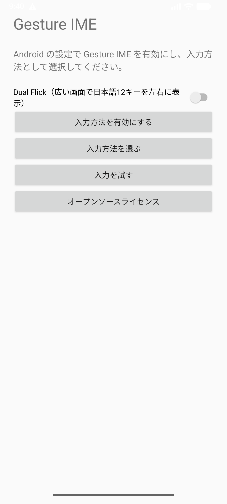
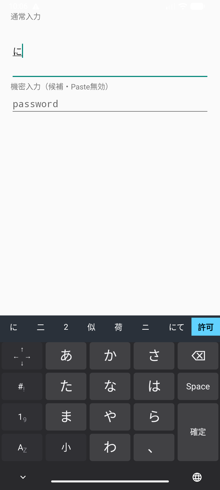
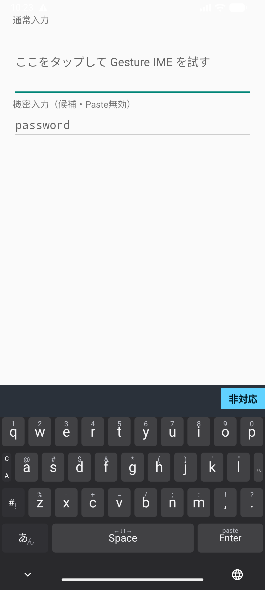
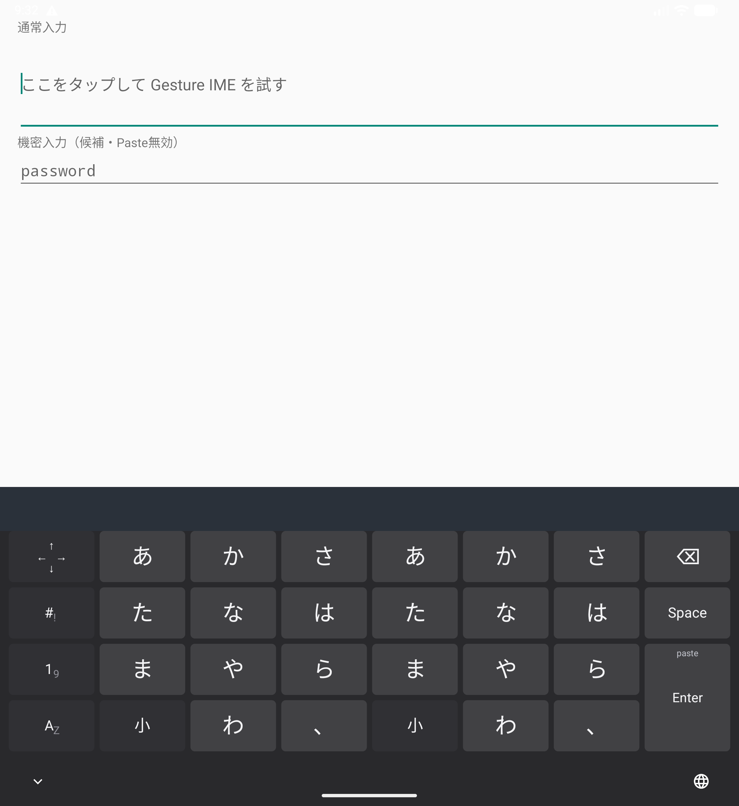
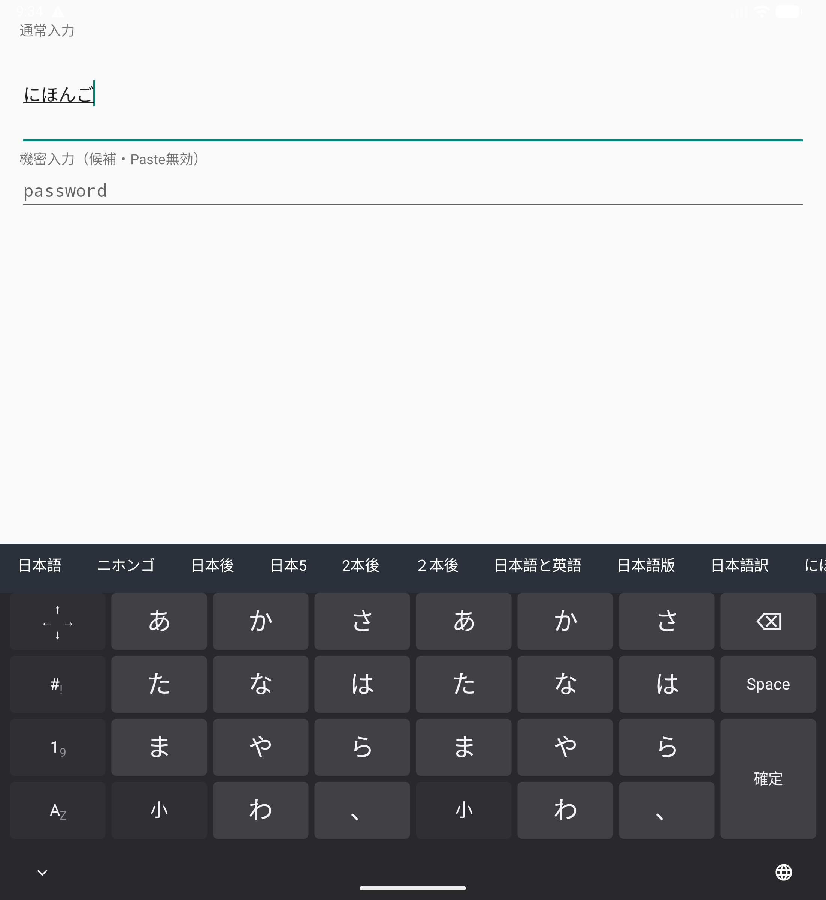

Gesture IME v0.3.0
使い方
Androidへ追加し、入力方法として選び、五つのレイヤー、Dual Flick、端末内音声入力を操作する手順です。
インストール
- v0.3.0 APKをZIPでダウンロードし、AndroidのFilesなどでZIPを展開します。
- 展開したgesture-ime-v0.3.0.apkを開き、Androidの案内に従ってインストールします。初回だけ、使用したブラウザまたはファイル管理アプリに「不明なアプリのインストール」の許可が必要な場合があります。
- インストール後に「Gesture IME」を開きます。
v0.3.0は開発用のdebug署名で配布するARM64端末向けAPKです。Android 9（API 28）以上で動作します。

IMEを有効にする
- セットアップ画面からAndroidの「キーボードを管理」を開きます。
- 一覧にある「Gesture IME」を有効にします。Androidが表示する注意を確認して続行します。
- 文字入力欄を開き、ナビゲーションバーのキーボード切替から「Gesture IME」を選びます。
Gesture IMEはネットワーク権限を持ちません。通常入力とMozc変換は端末内で処理します。
端末内の音声入力を使う
- Android 12以降の対応端末で、候補欄の「許可」を押します。
- 開いたGesture IMEの画面で、Androidの案内からマイクの使用を許可します。文字入力欄へ戻り、候補欄の「音声」を押すと録音が始まります。
- 話し終えたら「停止」を押します。認識結果が表示されたら、内容を確認して「確定」または「取消」を選びます。
端末内の日本語音声認識サービスと日本語モデルが必要です。利用できない場合は候補欄に「非対応」と表示され、押すと理由を確認できます。通信型の音声認識へは切り替わりません。録音中または認識待ちに入力欄を切り替えるかキーボードを閉じると、その音声入力は取り消されます。マイクを許可しただけでは録音を開始しません。


五つのレイヤーを切り替える
左下のレイヤーキーは、現在の表示にかかわらず同じ方向へ移動します。中央の文字はタップ時の移動先です。
| 操作 | 移動先 |
|---|---|
| 左フリック | 記号 |
| 上フリック | 日本語 |
| 右フリック | テンキー |
| 下フリック | QWERTY |
| あんをタップ | 日本語 |
| AZをタップ | QWERTY |
広い画面でDual Flickを使う
- Gesture IMEのセットアップ画面を開き、「Dual Flick」を有効にします。
- Fold7を開くなど、横幅の広い画面で日本語レイヤーを開くと、かな12キーが左右に1組ずつ表示されます。
- 左右どちらからでも同じ読みへ入力できます。狭い画面では設定を保ったまま、自動的に通常の1組表示へ戻ります。
Dual Flickの初期設定はOFFです。数字、記号、候補欄、Space、Enterなどの編集キーは複製されません。

日本語を入力して変換する
かなキーをタップすると中央、上下左右へ動かすと各方向のかなが入ります。たとえば「あ」は中央が「あ」、左が「い」、上が「う」、右が「え」、下が「お」です。同じキーを続けて押しても文字が置き換わらず、入力した回数だけ追加されます。
- 左下キーを上へフリックして「日本語」を開きます。
- かなを中央または四方向から選びます。入力中の読みと変換候補が上段に表示されます。
- Spaceをタップして候補を巡回します。候補を直接タップするか、「確定」を押すと確定します。
「小」キーはタップで直前のかなを変換可能な形へ順番に切り替え、上で小文字、左で濁点、右で半濁点へ直接切り替えます。変換中の「確定」は、上で無変換、左でカタカナの表示へ切り替え、続けてタップすると確定します。読みがないときのSpaceは空白、変換中でないときのEnterは入力欄の指定アクションまたは改行になります。

QWERTYで英字と記号を入力する
| 操作 | 入力 |
|---|---|
| 英字キーをタップ | 小文字 |
| 英字キーを上へスワイプ | その一文字だけ大文字 |
| 英字キーを下へフリック | キー上部の数字またはASCII記号 |
| C/Aを上へフリック | 次の一キーへAltを適用 |
| C/Aを下へフリック | 次の一キーへCtrlを適用 |
| BSをタップ | 一文字削除 |
| BSを下へフリック | ESC操作 |
C/Aキーの表示は上側がC、下側がAです。操作は上がAlt、下がCtrlです。選択後は背景色が変わり、次の一キーへ適用すると解除されます。記号レイヤーにもESCキーがあります。
カーソル、削除、Paste
Spaceトラックパッド
Spaceを押したまま指を動かすと、カーソルを移動できます。最初に大きく動かした方向に応じて縦または横へ進み、指を離すまで軸が固定されます。横は文字単位、縦は改行で区切られた行単位（画面上の折り返しを除く）で移動します。
カーソルレイヤー
矢印に加え、「先頭」と「末尾」で入力欄の端へ移動できます。日本語、テンキー、カーソルにある通常幅の削除キーはタップでき、押し続けると連続削除します。
Paste
Enterを下へフリックするとクリップボード先頭のテキストを貼り付けます。パスワード欄ではPasteと候補学習を無効にします。
v0.3.0で変わったこと
- 対応端末で、認識結果を確認してから確定できる端末内日本語音声入力を追加しました。
- 録音停止、認識待ちの取消、マイク権限、非対応理由を候補欄から操作できます。
- 入力欄を切り替えたとき、進行中または遅れて届いた音声認識結果を破棄します。
以前の版が必要な場合はv0.2.0 APK入りZIPまたはv0.1.0 APK入りZIPを利用できます。
v0.3.0の制約
- 個人辞書、他サービスの会話ログ取り込み、端末間同期、クラウドバックアップはありません。
- 音声入力はAndroid 12以降が対象です。端末内認識サービスまたは日本語モデルが導入されていない端末では利用できません。
- エミュレーターで日本語モデルがない場合の「非対応」表示を確認しています。実際の日本語発話からの認識は未検証です。
- Galaxy Z Fold7の外画面相当412dp、内画面相当840dpをエミュレーターで確認しています。Fold7実機での最終検証は未実施です。
- 配布APKはARM64向けです。
- 操作モックはジェスチャーと画面遷移の参考用です。候補生成には小さな内蔵辞書を使い、Dual Flickと音声入力などAndroid版v0.3.0の一部機能には対応していません。